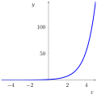
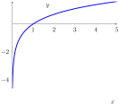
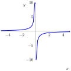
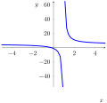
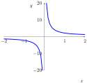
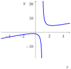

Consider the function \(f(x)=\frac{1}{x^{1/3}}\):
Consider the function \(f(x)=\frac{1}{x^{1/3}}\):
How would you classify the behavior of \(x\) as \(x\) grows arbitrarily large?
We say the limit of \(f(x)\) as \(x\) goes to infinity is \(L\) or \[\lim_{x\to \infty}f(x) = L\] if for any distance from L, \(f(x)\) for large enough \(x\) stays within that distance from \(L\).
If \[\lim_{x\to \infty}f(x)=a, \text{or }, \lim_{x\to-\infty}f(x)=a\] we say that \(f(x)\) has a horizontal asymptote \(y=a\).
Which of these appears to have a horizontal asymptote?




Consider a plot of \(\tan(x)\) on \([-\pi/2, \pi/2]\):
Based on this, what asymptotes should \(\arctan(x)\) have?
Plot \(f(x)=x^n\) for \(n=-3,-2,-1,0,1,2,3\). What are the limits of each as \(x\) goes to either infinity?
What is a general rule for the limits of \(x^n\) to either infinity where \(n\) is an integer?
Plot the following: \(f(x)=\frac{x^2-2x+2}{x^3+1}, f(x)=\frac{x^3+x-3}{x^2+2000x+1}, f(x)=\frac{2x^3-9x+200000}{x^3+7x^2+1}\). What are the limits of each as \(x\) approaches either infinity?
Plot the following: \(g(x)=x, g(x)=2x^0, g(x)=x^{-1}\). Match each to the \(f(x)\) on the previous slide that most closely resembles it.
Let \(r(x)=\frac{a_nx^n+a_{n-1}x^{n-1}+\cdots a_0x^0}{b_mx^m+b_{m-1}x^{m-1}+\cdots b_0x^0} \approx \frac{a_nx^n}{b_mx^m}.\)
If \(n-m< 0\) what are it's limits as \(x\) approaches the infinities?
Let \(r(x)=\frac{a_nx^n+a_{n-1}x^{n-1}+\cdots a_0x^0}{b_mx^m+b_{m-1}x^{m-1}+\cdots b_0x^0}\approx \frac{a_nx^n}{b_mx^m}.\)
If \(m-n=0\) what are it's limits as \(x\) approaches the infinities?
(The sign of \(a_n, b_m\) might matter.)
Let \(r(x)=\frac{a_nx^n+a_{n-1}x^{n-1}+\cdots a_0x^0}{b_mx^m+b_{m-1}x^{m-1}+\cdots b_0x^0}\approx \frac{a_nx^n}{b_mx^m}.\)
If \(m-n>0\) what are it's limits as \(x\) approaches the infinities?
(The sign of \(a_n, b_m\) might matter, as might even/oddness somehow.)
Find the limits to positive and negative infinity of the following without technology.